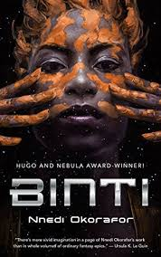

Check out the book of the month!
Pick a month to see a summary of the book for that month
Book Synopsis
Dead Until Dark, like the rest of the series to which it belongs, is narrated by Sookie Stackhouse, a telepathic waitress from the small fictional Louisiana town of Bon Temps, not far from the non-fictional town of Shreveport. It is set at approximately the same time as the book's publication. However, in the world of the novel, vampires (and other supernatural creatures) are a reality.
At some point in the recent past, Sookie tells us, the invention of synthetic blood, called Tru Blood, has made it unnecessary for vampires to feed on humans for sustenance, thus allowing the world's previously underground vampire community to reveal its existence to humans. This "Great Revelation" was an internationally televised event in which vampires expressed the desire for peaceful coexistence with humans. Also relevant to plot development is the fact that vampire blood is an addictive and illegal drug which accelerates healing, increases strength, improves the libido, and make the person who drinks it better-looking.
Sookie Stackhouse is 25 years old and works as a barmaid at Merlotte's. She lives in Bon Temps with her grandmother, Adele. She also has an older brother, Jason, but he lives on his own. Her parents died in a flash flood when she was young. Since her childhood, Sookie has been capable of reading people's minds, but she doesn't see it as a blessing. Because of her "disability", she can't help knowing what other people are thinking all the time, unless she concentrates and "puts up her guard". That's why she never wanted to go to college, because she wouldn't have been able to study and repress her gift at the same time. Furthermore, she never had a boyfriend or sexual relationships because she couldn't feel comfortable if her partner thought something bad about her. Early in the book, Sookie meets a vampire, a Civil War veteran named Bill Compton, while working at Merlotte's. After first meeting Bill, Sookie saves him from the Rattrays, a couple of drainers (people who steal blood from vampires). Then, Sookie realizes she cannot read the minds of vampires.
Book Synopsis
Living Dead in Dallas is the second book in Charlaine Harris's series The Southern Vampire Mysteries. This second novel follows the adventures of telepathic waitress Sookie Stackhouse of Bon Temps, Louisiana, as she is employed by Dallas vampires to use her telepathy to help find their lost companion. Sookie agrees to help investigate the whereabouts of the missing vampire on one condition: any humans found to be involved must be turned over to human law enforcement rather than subjected to vampire justice. In Dallas Sookie Stackhouse has her first encounter with the anti-vampire organization "The Fellowship of the Sun," as well as meeting and learning of the existence of werewolves.
The Dallas vampires, Sookie, and Bill learn that The Fellowship of the Sun (FotS) as well as a "renouncer" vampire named Godfrey might be behind the disappearance. Sookie decides to go to the FotS church with Hugo, Stan's human dish washer (although he is a lawyer in his regular human life) and the lover of Stan's "sister," Isabel, in an undercover mission. Sookie discovers that Hugo is a traitor, but her cover is quickly exposed when they meet Steve and Sarah Newlin, and she is badly hurt while trying to escape from the church. She does escape with the help of Luna, a shapeshifter, and Godfrey (who turns out to be a remorseful child molester and killer). After a run-in with more Supes,including an undercover doctor at a local hospital and some werewolves, Sookie ends up back at the FotS to be with Godfrey as he "meets the sun" ending his immortal existance.
Book Synopsis
In Elliott James’s Charming the world is under a magical spell called the Pax Arcana, which prevents regular humans from being able to “see, believe, or even seriously consider any evidence of the supernatural that is not an immediate threat to their survival.” Enter the Knights Templar, who sort of police the supernatural world. If a certain supernatural faction starts to behave in a violent manner that could get them noticed, the Knights step in and deal with the problem.
John Charming lives in a world where magickind is protected from humankind by a glamour called the Pax Arcana, and humankind is protected from magickind by a secret order of modern day knights. John was once one of these knights, but that was before he became one of the creatures that he used to hunt. Now John is forced to hide in the same shadows he used to stalk through, constantly staying on the move, changing his name, and living off the grid.
John ends up joining forces with a group of vampire slayers, including the beautiful blonde, to help them take out an overzealous vampire trying to become Queen of her hive. During the investigation, however, it becomes more and more apparent that within this group vampires may not be the only thing John has to worry about.
Book Synopsis
At the very beginning, the reader hears an old story-teller speaking of a famous old wizard called Taborlin the Great, who was captured by evil beings called the Chandrian. Escaping them, Taborlin fell from a great height—but since he knew the Name of the Wind, he called it and the Wind came and set him down safely. In later parts of the book, characters are often skeptical of such stories. Some kinds of magic are taught in The University as an academic discipline and have daily life applications (those who can afford it could buy magical lamps, much better than the candles used by poorer people). However, it is doubted that magicians can truly call upon The Wind, and the Chandrian—whose appearance is supposedly heralded by flames turning blue—are often dismissed as mythical bogeymen. The story begins in the rural town of Newarre, introducing the innkeeper Kote and his assistant Bast, revealing that Kote is the renowned Kvothe: an unequaled sword fighter, magician, and musician, rumored to have killed a king and caused the present war. His assistant and student Bast is a prince of the Fae. Kvothe saves Chronicler, a traveling scribe, from spider-like creatures called Scrael, whereupon Chronicler asks to record Kvothe's story. Upon consenting, Kvothe tells Chronicler that this will take three days (corresponding to the planned trilogy of novels).
The third book in this series hasn't been released.
Book Synopsis

In The Wise Man's Fear, Kvothe searches for answers, attempting to uncover the truth about the mysterious Amyr, the Chandrian, and the death of his parents. Along the way, Kvothe is put on trial by the legendary Adem mercenaries, forced to reclaim the honor of his family, and travels into the Fae realm. There he meets Felurian, the faerie woman no man can resist, and who no man has ever survived...until Kvothe. Now, Kvothe takes his first steps on the path of the hero and learns how difficult life can be when a man becomes a legend in his own time.
The third book in the series hasn't been released.
Book Synopsis
In 1946, after working apart during the Second World War, British Army nurse Claire Randall and her husband Frank, a history professor, go on a second honeymoon to Inverness, Scotland. Frank conducts research into his family history and Claire goes plant-gathering near standing stones on the hill of Craigh na Dun. She faints when investigating a buzzing noise near the stones; upon waking, she encounters Frank's ancestor, Captain Jack Randall. Before Captain Randall can take her into custody, he is knocked unconscious by a Scottish Gael who takes Claire to his clansmen. As the Gaels inexpertly attend their injured comrade Jamie, Claire uses her medical skill to set Jamie's dislocated shoulder. The men identify themselves as members of Clan MacKenzie, and Claire eventually concludes that she has traveled into the past. She represents herself as an English widow who is traveling to France to see her family. The Gaels do not believe her and take her to Castle Leoch, where Claire searches for a way to return to her own time.
The Gaels of 1743 see Claire as a "Gall" (foreigner), "Sassenach", or "Outlander", ignorant of Gaelic culture. Her medical skills earn their respect; but the clan chieftain, Colum MacKenzie, suspects her of being an English spy. Colum sends her with his brother, Dougal, to collect rents; on the way he also solicits donations for the Jacobites, overseen by Ned Gowan, a lawyer from Edinburgh who is working for the Clan.
When chance again brings her to his attention, Captain Randall tells Dougal to bring Claire to him for questioning. There is suspicion that she is perhaps an English spy. To keep Claire from Randall, Dougal has her wed Jamie, which makes her a Scottish citizen. Torn between her attachment to Jamie and the thought of Frank, Claire tries to return to Craigh na Dun.
Claire eventually tells Jamie her real story, and he takes her to Craigh na Dun. When he offers her the chance to stay or go, she decides to stay.
Book Synopsis
Tales of Dunk and Egg is a series of fantasy novellas, set in the world of A Song of Ice and Fire novels. Follow the adventures of "Dunk" (the future Lord Commander of the Kingsguard, Ser Duncan the Tall) and "Egg" (the future king Aegon V Targaryen), some 90 years before the events of the novels.
Upon the death of a nomadic 'hedge knight', Ser Arlan of Pennytree, his squire Dunk adopts Ser Arlan's armor as his own, as well as his equipment, three horses, and remaining money, in hope of becoming a knight at the town of Ashford, under the name of 'Ser Duncan the Tall'. En route, he gains his own squire in a boy nicknamed 'Egg'. At Ashford, Dunk sells one of his horses for a suit of armor by the smith Pate, and befriends Ser Steffon Fossoway's squire and cousin, Raymun Fossoway. Without proof of his knighthood, he is nearly barred from competition until Prince Baelor Targaryen vouches for him. Forbidden to use Ser Arlan's coat of arms, Dunk commissions an attractive young puppeteer named Tanselle to paint a new one. Dunk watches the first day of competition, with Egg on his shoulders. After several spectacular tilts, Baelor's nephew, Prince Aerion Targaryen, disgraces himself by killing Ser Humfrey Hardyng's horse. When Dunk retires into the Fossoways' tent to drink with Raymun, Egg reveals that Tanselle is being beaten by Prince Aerion. Dunk rushes to defend Tanselle [called Tanselle Too-Tall] attacks Aerion; and when the royal guard arrests Dunk, Egg identifies himself as Aerion's brother, Prince Aegon. After meeting Prince Baelor again, Dunk chooses trial by combat rather than mutilation for his attack on Aerion, who demands a 'Trial of Seven' (in which two parties of seven knights contend on horseback).
Book Synopsis

A Game of Thrones is set in the Seven Kingdoms of Westeros, a land reminiscent of medieval Europe. In Westeros the seasons last for years, sometimes decades, at a time. Fifteen years prior to the novel, the Seven Kingdoms were torn apart by a civil war, known alternately as 'Robert's Rebellion' and the 'War of the Usurper'. Prince Rhaegar Targaryen kidnapped Lyanna Stark, arousing the ire of her family and of her betrothed, Lord Robert Baratheon. The Mad King, Aerys II Targaryen, had Lyanna's father and eldest brother executed when they demanded her safe return. Her second brother, Eddard, joined his boyhood friend Robert Baratheon and Jon Arryn, with whom they had been fostered as children, in declaring war against the Targaryens, securing the allegiances of House Tully and House Arryn through a network of dynastic marriages (Lord Eddard to Catelyn Tully and Lord Jon Arryn to Lysa Tully). The powerful House Tyrell continued to support the King, but House Lannister and House Martell both dragged their feet due to insults against their houses by the King. The civil war climaxed with the Battle of the Trident, where Prince Rhaegar was killed by Robert Baratheon. The Lannisters finally agreed to support King Aerys, but then brutally turned against him, sacking the capital at King's Landing. Jaime Lannister of the Kingsguard executed King Aerys and House Lannister swore loyalty to Robert Baratheon. The Tyrells and remaining royalists surrendered and Robert Baratheon was declared King of the Seven Kingdoms. Unfortunately, during the war, Lyanna Stark had died, apparently of illness; Robert Baratheon instead married Cersei Lannister to cement the alliance. Despite Robert's victory, the Mad King's youngest son Viserys and youngest daughter Daenerys were taken to safety across the sea by loyal retainers. After the war House Martell chose a path of isolation, since Prince Doran's sister Elia (Prince Rhaegar's wife) and her young children had been killed by Lannister armsmen during the storming of the capital. Six years later King Robert proved his resolve by defeating a rebellion by Lord Balon Greyjoy of the Iron Islands. Balon's two eldest sons were killed and his youngest son, Theon, was given to the care of Eddard Stark as a ward.
A Game of Thrones follows three principal storylines as they develop in tandem with one another. Ultimately, a civil war, later dubbed the War of the Five Kings, erupts. Thus, the power struggle for the iron throne begins.
Book Synopsis
A Clash of Kings picks up the story where A Game of Thrones leaves off. The Seven Kingdoms are plagued by civil war, the Night's Watch mounts a reconnaissance force north of the Wall, and in the distant east, Daenerys Targaryen continues her quest to return to the Seven Kingdoms and claim her birthright.
Robb Stark, King of the North, tries to secure an alliance with the Greyjoys of the Iron Islands by sending Theon Greyjoy, a ward of the Stark family who has been like a brother to Robb, to negotiate.
At Winterfell, young Bran Stark chafes as he is left in charge. In his dreams, he inhabits the body of his direwolf, Summer. Jojen and Meera Reed arrive at Winterfell, and the three bond over Jojen and Bran’s supernatural powers.
Stannis Baratheon, older brother of Robert, declares himself the rightful heir to the Iron Throne. With the support of Melisandre, a red priestess, he attacks his brother Renly, who has also declared himself king.
Book Synopsis
Legion tells the story of Stephen Leeds, better known as 'Legion', a man whose unique mental condition allows him to generate multitude of personae. He is a brilliant problem solver, rich and quite good at what he does, helped by his hallucinations. However, he would rather be left alone, and that means no researchers or psychologists who want to get to the bottom of his abilities.
But then Legion receives a letter with a mysterious, impossible picture, and he can't resist traveling the world to search for answers. He must track down a missing inventor who disappeared with a camera that can take pictures of the past. Helped by Monica, who is also searching for the inventor, he travels to Jerusalem to solve the problem.
Book Synopsis
A young woman named Binti is the first member of the Himba ethnic group on Earth (closely modeled on the Himba people)[4] to be accepted into the prestigious intergalactic university, Oomza Uni. Upon being notified of her acceptance, Binti runs away from home and boards a transport ship to Oomza Uni. While in transit, the ship is hijacked by the Meduse, a jellyfish-like alien species that have previously been at war with the Khoush, another human ethnic group. After the Meduse murder all other inhabitants of the ship, Binti retreats into her private living quarters.
She subsequently discovers that a piece of ancient technology she had brought with her from Earth, referred to as her edan, enables direct communication with the Meduse, and that her otjize, a type of mixed clay made from the soil of her homeland, has healing properties when applied to the tentacles of the Meduse. She makes a friend in one of the younger, more hot-headed Meduse, named Okwu, and subsequently brokers a tentative truce between herself and the hijackers. Upon arrival at the University, she is able to negotiate a lasting peace between the Meduse and the human race, after which she begins her studies at Oomza Uni in earnest.
Book Synopsis
The novel covers the early life of FitzChivalry, a royal bastard living in Buckkeep Castle as he begins his training as an assassin and successfully safeguards the throne from his over-ambitious uncle Regal, almost at the cost of his life.
The story opens with six year old Fitz being marched by his maternal grandfather to the Farseer's army base in Moonseye, the Six Duchies' outpost on the borders of the Mountain kingdom, currently under the command of Prince Verity, the second Son of King Shrewd. At the door, he is given to a soldier, who is told that he is King-in-Waiting Chivalry's bastard son. The soldier brings him to Prince Verity who orders that he be given into the care of Burrich, Chivalry's own stableman and man at arms. With Burrich, Fitz travels to Buckkeep, the seat of the Farseers. In order to protect Fitz by not allowing them to be associated through contact as well as through blood, his father Chivalry abdicates from the post of King-in-Waiting and with his wife the Lady Patience retires to the royal holdings of Withywoods before Fitz arrives.